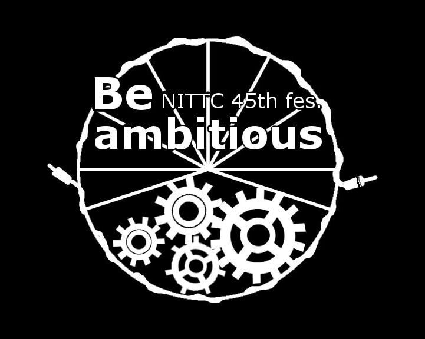
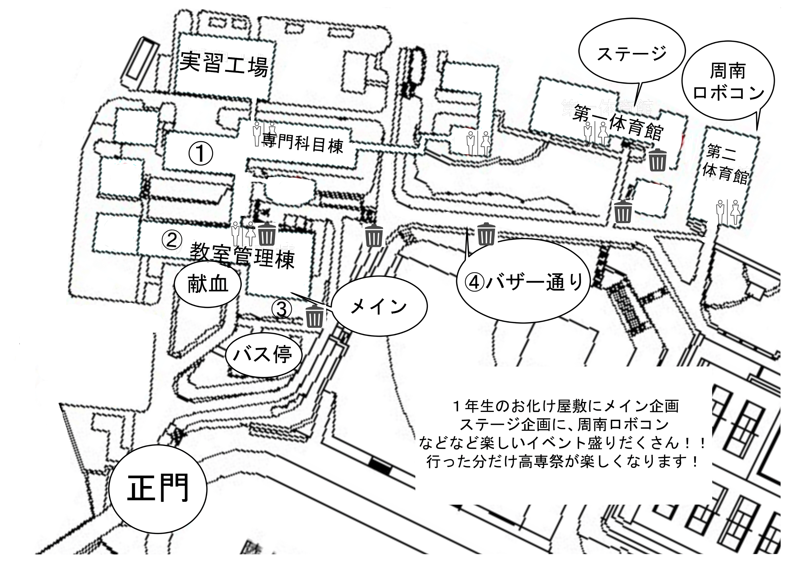
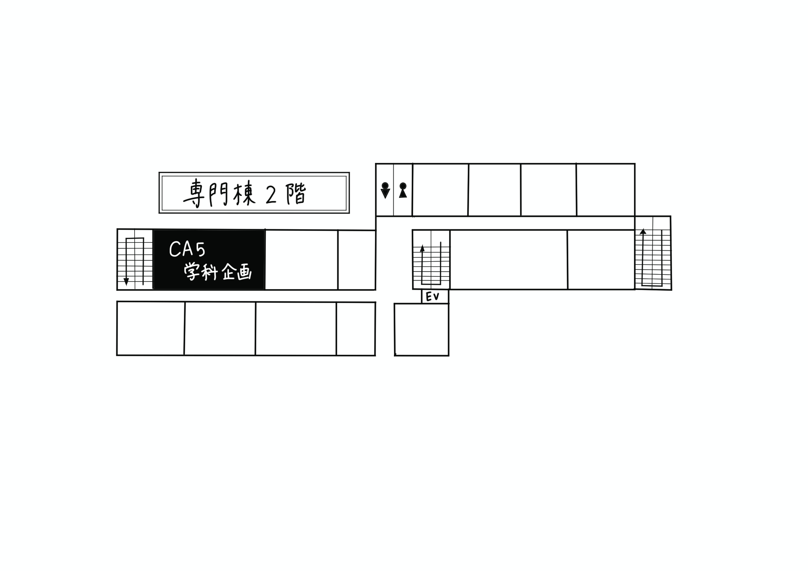
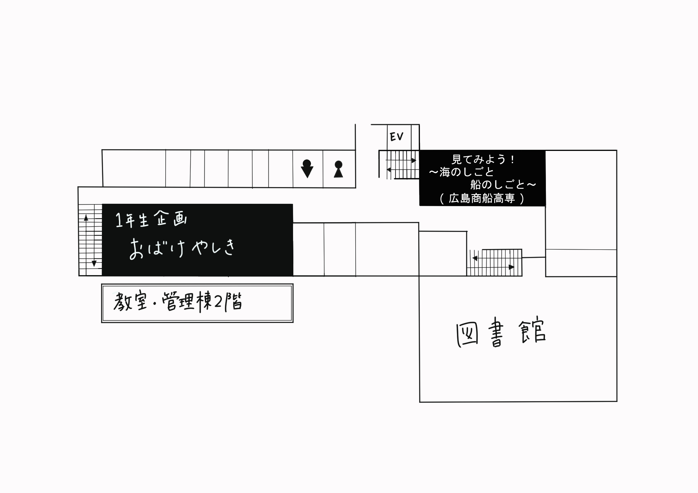
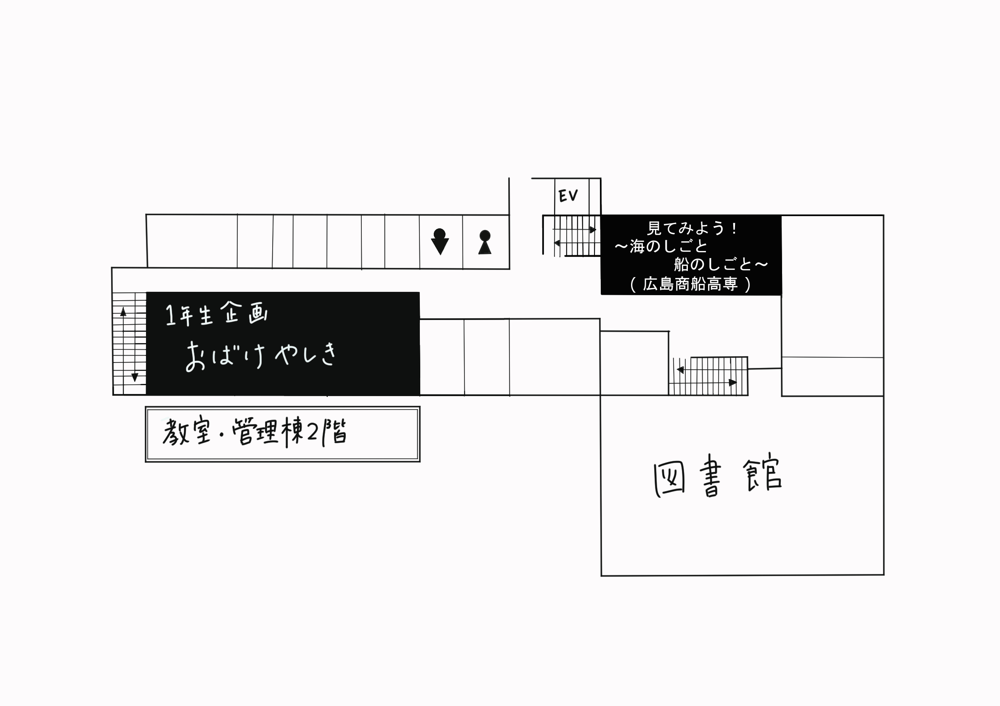
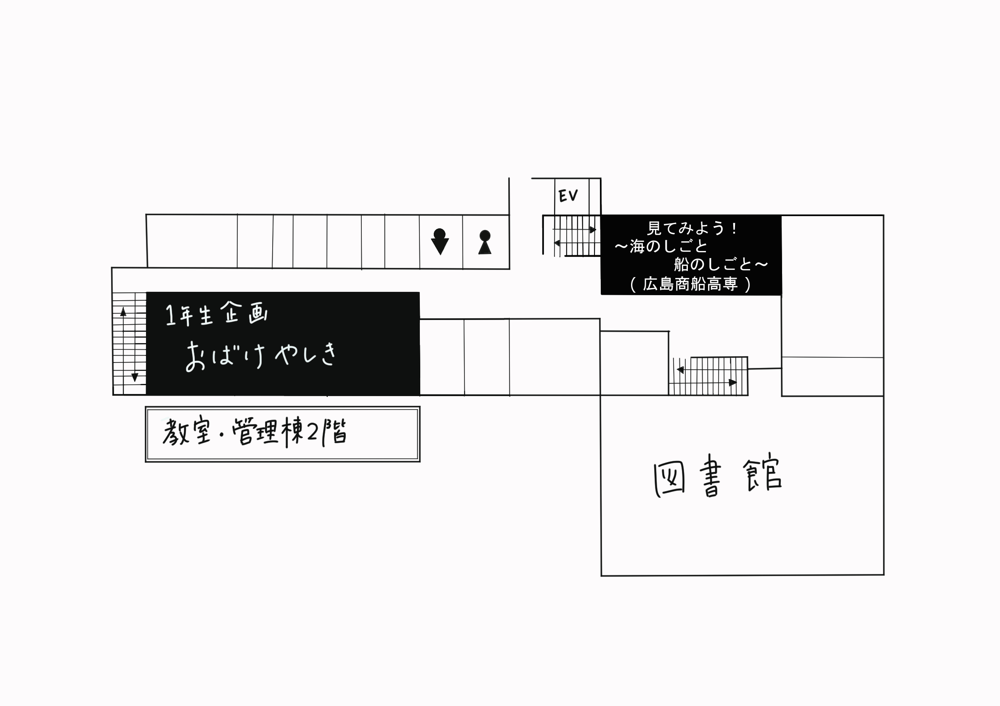
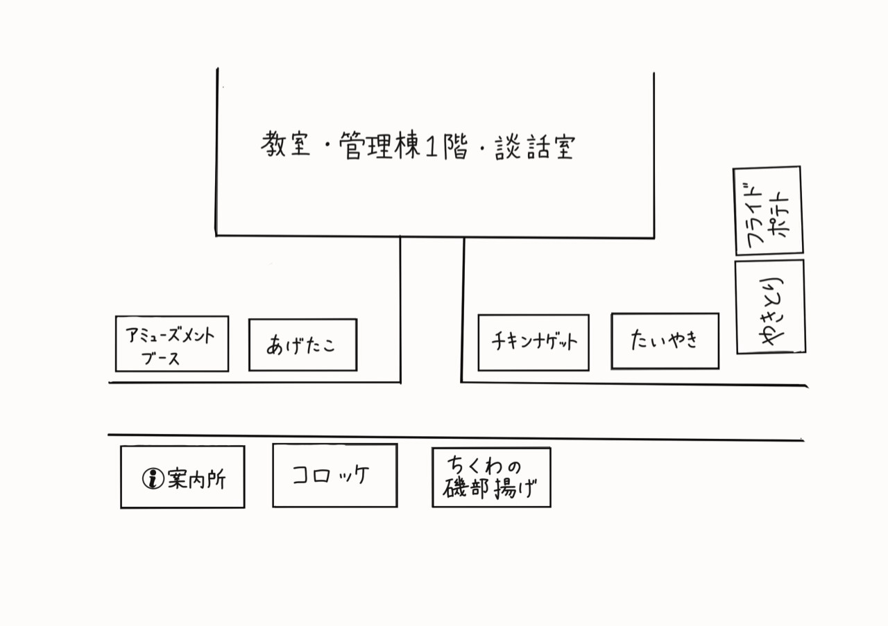
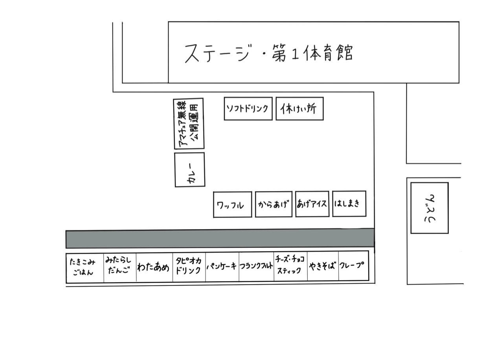

第45回徳山高専高専祭
11月2日、3日開催！
場所 徳山工業高等専門学校
周南ロボコンはこちら

学生会HPはこちら

フォローはこちら
第45回高専高専祭
今年の高専祭のテーマは「Be ambitious」です。日本語に訳すと「大志を抱け」という意味で、これには、一人一人が高専祭という一つのイベントに対して様々な大きな志を持って取り組んでほしい、という思いが込められています。今年は高専生の技術を用いたメイン企画やお化け屋敷、クラスや部活によるバザー、学生たちが盛り上げる様々なステージ企画など、たくさんの企画を開催しています。ぜひ、足を運んでみてください。最後になりましたが、93人もの実行委員たちが様々な志を持ち、一丸となって創り上げたこの高専祭を、ぜひ楽しんでください！
ーーーーー部署紹介ーーーーー


千二夜物語
~徳山高専の消えた一夜~
あらすじ
ご存じだろうか。かの有名な千一夜物語に「幻の千二夜目」のお話が存在することを。長い時の中に埋もれた幻の一夜は、徳山高専に消えた最後の１ページと共に、今、千二百年の眠りから目覚めるー
全体図

クリックすると拡大します。
①専門科目棟

②教室管理棟
 

③,④バザー通り


バス ～Bus～
・JR徳山駅前から防長交通バス
「久米温泉口」行に乗車、「大学高専下」下車徒歩10分、運賃250円
「徳山高専」行に乗車、「高専正門」下車すぐ、運賃250円
・JR櫛ヶ浜駅から防長交通バス
「徳山高専」行に乗車、「高専正門」下車すぐ
※運賃は異なる場合がございますので、多めの準備をお願いします自動車 ～Car～
山陽自動車道 徳山東インターから約5分
タクシー ～Taxi～
JR徳山駅から約15分JR櫛ヶ浜駅から約10分
シャトルバスについて
高専祭期間中、徳山駅〜徳山高専間での無料シャトルバスを運行しています。また、徳山大学ポプラ祭の無料シャトルバスもご利用いただけます。
徳山高専の無料シャトルバスは徳山駅[みなと口(南口)]側から発車します。
徳山大学の無料シャトルバスは徳山駅[みゆき口(北口)]側から発車します。
徳山高専無料シャトルバス時刻表


{{department.name}}部署
{{department.comment}}